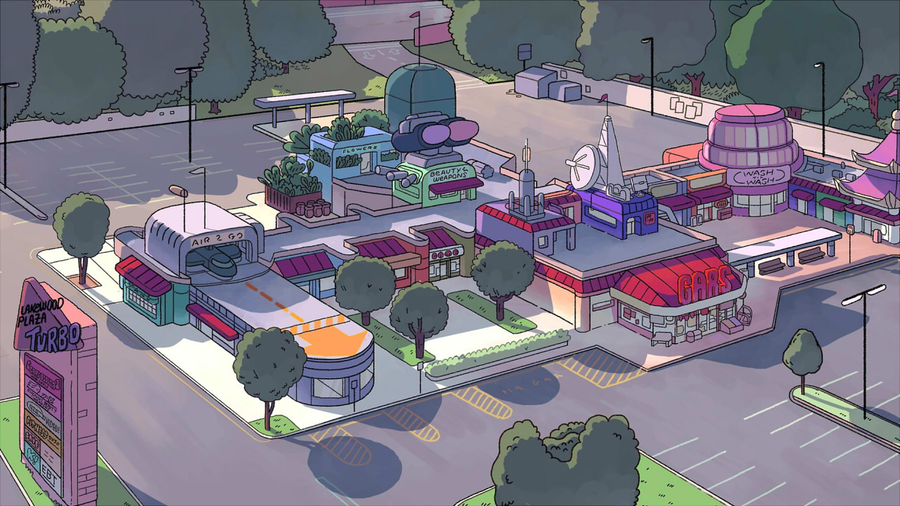

About K.O.
K.O. is the newest hire at Gar's Bodega located in Lakewood Plaza Turbo. He want's to become the world's greatest hero but his impatience to be the best may lead him down a dark path.
K.O. Characteristics
- Aged 6 - 11
- Short
- Were-puppy disguised as human
- Level 4 Hero
K.O.'s Friends n' Family
K.O.'s Love for his family and friends are what keeps him going. Though he meets many along the way, he keeps the folowing closest to his heart. Click on the images to learn more about them: